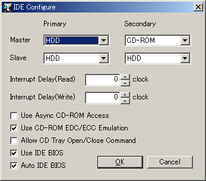

プライマリ・セカンダリのマスタ・スレーブに接続するデバイスを選択します。設定はリセット後に有効になります。
メニュー上ではプライマリマスタがIDE #0, プライマリスレーブがIDE #1, セカンダリマスタがIDE #2, セカンダリスレーブがIDE #3となります。
接続したいデバイスを選択します。ただし、OSによってはセカンダリやスレーブのハードディスクを認識しませんのでご注意ください。
| 項目名 | 説明 |
|---|---|
| None | 何も接続しません。Harddiskメニューでイメージファイルを選択しても接続していないものとして扱われます。 |
| HDD | ハードディスクを接続します。この場合でもHarddiskメニューでイメージファイルを選択していない場合は未接続として扱われます。 |
| CD-ROM | CD-ROMドライブを接続します。Harddiskメニューでイメージファイルを選択していない場合はディスクが入っていない状態として扱われます。 |
読み取り・書き込み時の割り込みウェイトを設定します。I/Oポート経由の読み書きでのみ効果があります。読み取りや書き込みが早すぎて不具合を起こす場合は値を設定してみてください。
チェックを入れるとCDドライブへの非同期アクセスが有効になります。CD読み込みでエミュレーションが遅くなるのを回避できます。実CD/DVDドライブを使用する場合は特に効果があります。イメージファイルを使う場合は逆効果かもしれません。
チェックを入れるとCDイメージファイルのEDC/ECCのチェックが有効になります。いわゆる不良セクタ検出系のCDチェック（初期のSafeDisc等）が正しく機能するようになります。
チェックを入れると実CD/DVDドライブのトレイ開閉コマンドの実行を許可します。エミュレータ内でCDトレイの開閉が行えるようになります。
チェックを入れると実機IDE BIOSを使用します。使用できるBIOSファイル名はide.rom, d8000.rom, bank3.bin, bios9821.romです。BIOSファイルの詳細は外部ファイルを参照してください。
チェックを入れると実機IDE BIOSの有効／無効を自動決定します。Use IDE BIOSにチェックが入っている場合のみ有効です。